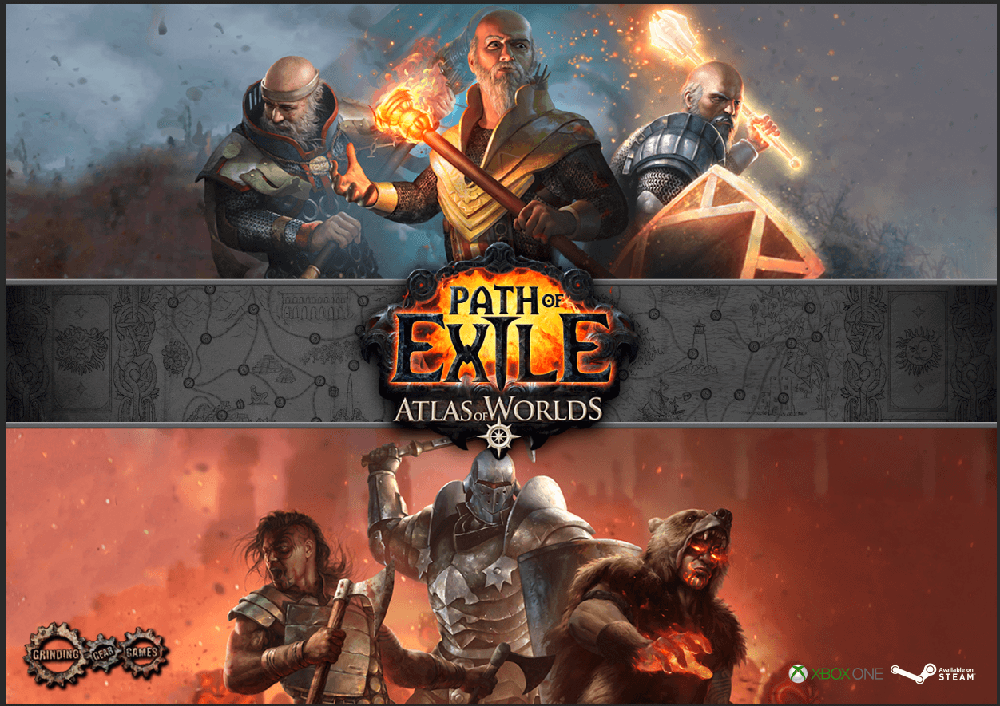
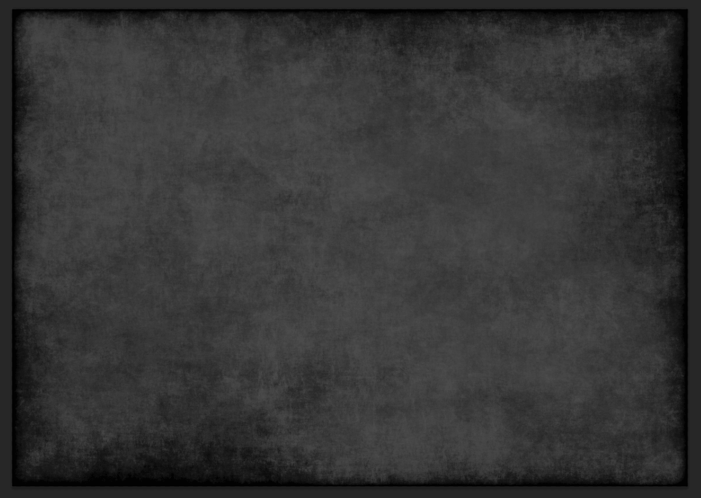
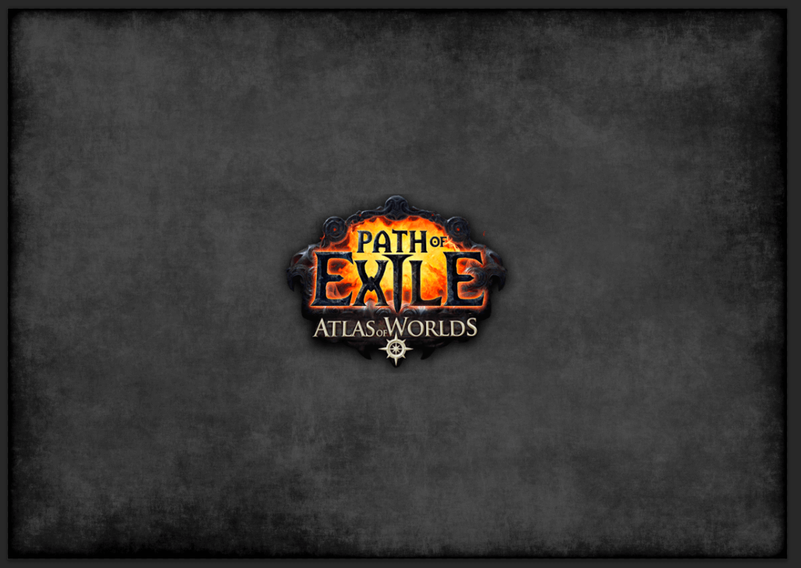
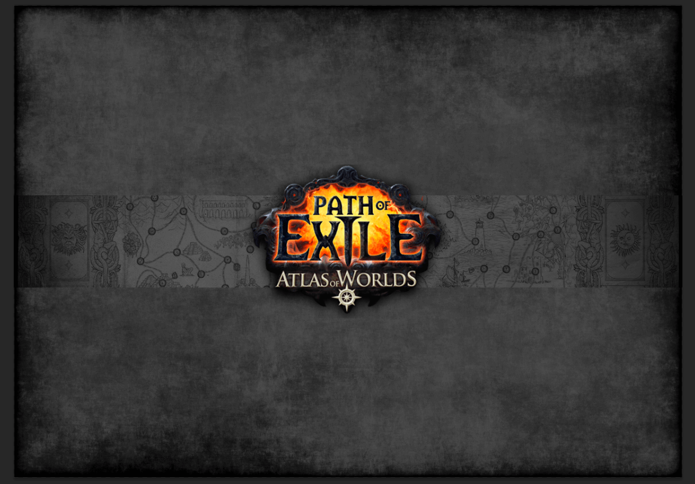
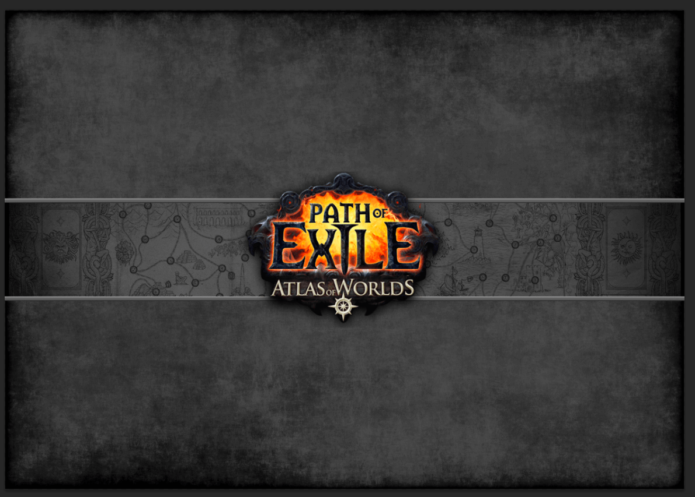
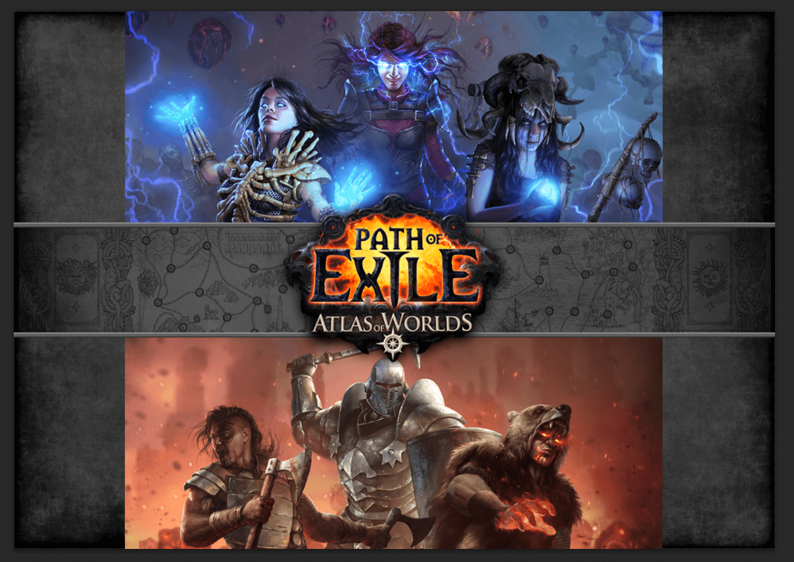
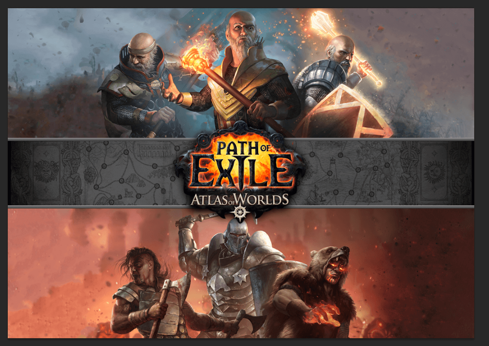

-
Spil Plakat [Kommunikation / IT - A niveau]
Vi fik til opgave at lave en spilplakat til et spil vi selv valgte.

Jeg valgte at tage spillet Path of Exile, hvor jeg så her viser nogle karaktere fra spillet.Her er 1. billede af min plakat.
Her er 2. billede af mit fremskridt.
Her er 3. billede af mit fremskridt.
Her er 4. billede af mit fremskridt.
Her er 5. billede af mit fremskridt.
Her er 6. billede af mit fremskridt.

Her er 7. billede af mit fremskridt.
Og her har vi selvfølgelig hvordan billedet endte
**OBS** Jeg har ikke noget at gøre med den officielle hjemmeside, jeg har bare lavet en plakat opgave baseret på spillet.